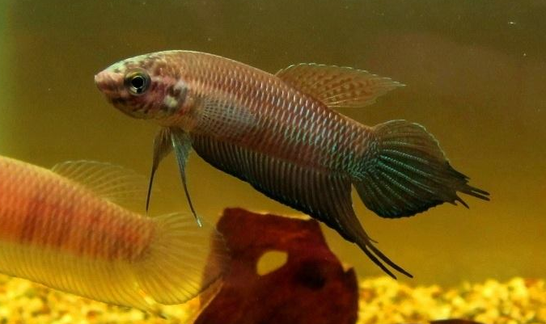
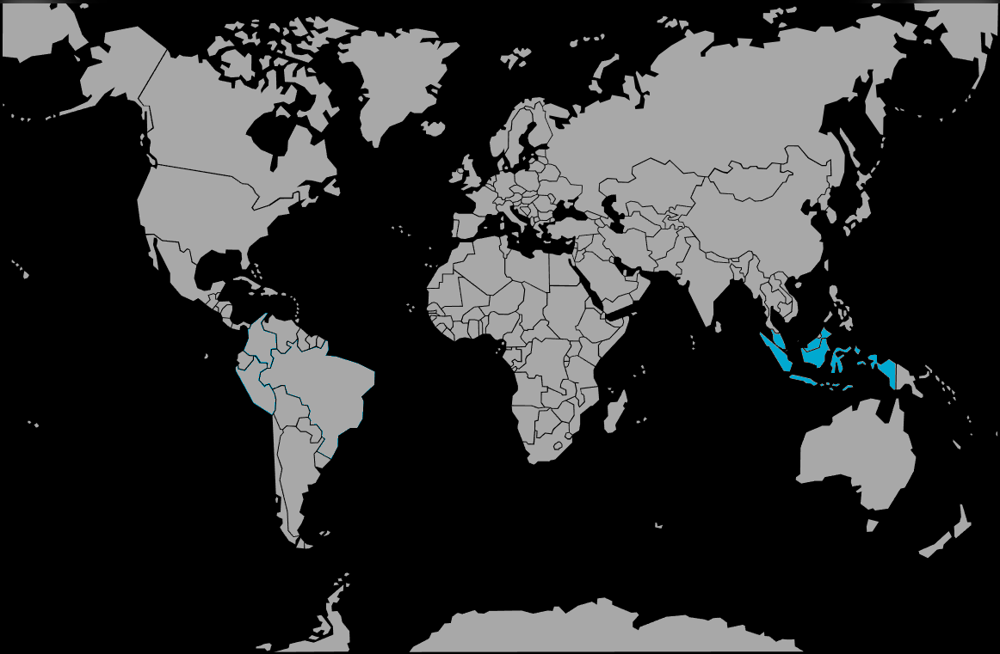

Systématique
- Ordre : Anabantiformes
- Famille : Osphronemidae
- Genre : Betta
- Espèce : B. bellica

Betta bellica, le combattant belliqueux, malgré son épithète spécifique, n'est pas notablement plus agressif que d'autres espèces de Betta. C'est un petit poisson labyrinthidé d'Asie du Sud-Est, caractérisé par un corps élancé et fusiforme.
Le mâle atteint 8 à 10 cm de longueur avec des nageoires anale et caudale nettement effilées et allongées, présentant des colorations intenses de vert, bleu et noir, avec parfois des taches rouges selon les populations. La femelle est plus petite et moins colorée, avec des nageoires plus courtes.
L'espèce peut se décliner en plusieurs populations locales selon la région d'origine (Selangor, Perak, Pahang, Johor), chacune ayant des caractéristiques chromatiques légèrement différentes.
Contrairement au combattant du Siam, Betta bellica peut être maintenu en groupe dans un aquarium de grande taille ou en couple dans un volume plus modéré. Cependant, il garde une certaine agressivité territoriale, particulièrement entre mâles lors de la reproduction.
L'espèce doit impérativement être maintenue seule ou en couple, et en aucun cas avec des espèces agressives. Une végétation abondante, des cachettes et un habitat riche réduisent le stress et favorisent le bien-être. L'espèce fréquente naturellement les eaux noires tourbouses, acides et peu minéralisées, avec une préférence pour des environnements stagnants ou à très faible courant.
Mode : ovipare avec construction de nid de bulles; le mâle construit un nid en rassemblant des bulles d'air à la surface ou sous la végétation flottante.
À la reproduction, la femelle libère de 5 à 20 ovules que le mâle fertilise. Les œufs sont transférés dans le nid de bulles où le mâle les garde jalousement. La femelle peut récupérer les œufs tombés et les remonter au nid. L'éclosion intervient après 24 à 36 heures selon la température. Les alevins absorbent leur sac vitellin après 3 à 4 jours et deviennent autonomes.
La surface de l'eau doit être sans courant d'air pour éviter le dessèchement du nid de bulles, élément critique pour la réussite reproductrice.
Dimorphisme sexuel : très marqué; le mâle est notablement plus grand et plus coloré que la femelle, avec des nageoires anale et caudale franchement allongées et pointues, tandis que la femelle a une nageoire caudale arrondie et des nageoires plus courtes. La femelle présente un ventre plus arrondi en période de maturation ovariennes.
Espérance de vie : 5 à 8 ans en captivité, ce qui en fait une espèce plus robuste et longévive que Betta splendens.
Betta bellica fréquente les marécages tourbeux des forêts humides, les eaux noires peu minéralisées des tourbières, et les petits trous d'eau en forêts marécageuses. L'habitat naturel affiche une eau très acide (pH inférieur à 6, souvent 4–5), peu minéralisée (GH inférieur à 2), riche en matières organiques en décomposition et densément végétalisée. Cette espèce vit souvent en sympatrie avec d'autres bettas comme B. tussyae, B. livida, B. imbellis et B. persephone selon les localités.
Répartition

Origine naturelle :
- Sumatra occidental, Indonésie et Malaisie péninsulaire (nord de Selangor).
- Localités principales : forêts tourbouses de la région de Selangor, Perak, Pahang et Johor en Malaisie, ainsi que Sumatra en Indonésie.
- Introduction accidentelle signalée en République dominicaine (Caraïbes) après l'ouragan David en 1979, suite à l'échappée d'élevages privés.
L'espèce n'a pas bénéficié de la même popularité que B. splendens en aquariophilie, restant rare et réservée aux aquariophiles confirmés.
Paramètres de maintenance
Température : 24 à 30 °C, avec un optimum reproducteur autour de 28–29 °C.
pH : 5,0 à 6,0, préférablement entre 5,0 et 5,8; l'espèce se maintient mieux en eau acide comme dans son habitat naturel.
GH : 1 à 5 °dGH, eau très douce à douce; l'espèce dépérit en eau dure.
Courant : nul à très faible; préférer les eaux stagnantes.
Volume conseillé : un couple occupe un minimum de 80 L; un groupe demanderait au moins 400 L. Un mâle seul se contente de 50 L avec un bac très planté.
Régime alimentaire
Régime : insectivore carnivore; le combattant belliqueux préfère les petits arthropodes et insectes aquatiques.
En aquarium, accepte facilement une alimentation variée : petits flocons, granulés fins, nourriture congelée (daphnies, artémias, vers de vase) et nourriture vivante. Les daphnies et artémias vivantes conditionnent l'espèce pour la reproduction.
Distribuer une à deux fois par jour en petites quantités. Les proies vivantes sont fortement recommandées pour optimiser les couleurs et la mise en condition reproductrice.